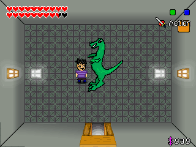
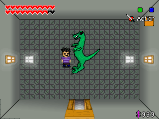

Színes, dél-koreai akciófilmdráma, 120 perc, 2005, rendezte: Kim Ji-Woon.
https://www.youtube.com/watch?v=0P4YG73KHHo
Sunwoo is no ordinary hotel manager. Decisive and efficient, he’s also the right hand man of underworld boss Kang. But tough guy Kang has a weakness; his young girlfriend Heesoo. Suspecting she’s unfaithful, Kang orders Sunwoo to take care of the problem. When Sunwoo discovers Heesoo with another man, he is unable to kill them without a reasonable explanation. Sunwoo has a hunch that in doing so he has made the first mistake of his life. But before he can figure out why he has this feeling he falls victim to a surprise attack.
Kang is furious and has ordered his gang members to hunt down Sunwoo and kill him. Heesoo may have triggered the conflict, but she is no longer what is driving Sunwoo. With nerves of steel, Sunwoo battles the gang alone. With each kill, he takes one step closer to Kang.
Őrületesen kemény film. Nagyon szép, mint egy falon lógó, megelevenedő impresszionista festmény. Olyan mintha Lee Byung-Hun még mindig élné a szofisztikált életét, pedig nem, halott. Az utolsó gyilkosság a film kulcsa, de amikor a főhős teste elterül, az a jelenet, na, az már giccs.
Eddig Park-Chan Wook, Kim Ji-Woon és Bong Joon-Ho rendezők munkáit „tanulmányoztam”, és véleményem szerint nagyon jók. A dél-koreai film a világ élvonalába tartozik. Persze mindez csak személyes vélemény, nyugodtan lehet vitatni, nem fogok megsértődni.


 
